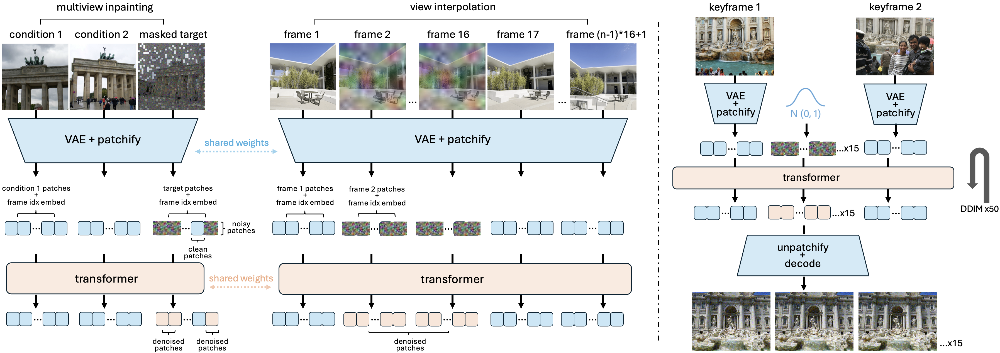

Multiview Inpainting of Internet Photos

TL;DR We propose KFC-W (KeyFrame-Conditioned video generation in-the-Wild), a method that generates a video by interpolating between unposed internet photos. Commercial video models like Luma Dream Machine can fail to produce 3D-consistent videos. For instance, in the videos below, it tends to hallucinate new buildings. Thus, we jointly train video synthesis with a scalable 3D-aware objective, which teaches our model to identify the scene geometry and layout.
We address the problem of generating videos from unposed internet photos. A handful of input images serve as keyframes, and our model interpolates between them to simulate a path moving between the cameras. Given random images, a model's ability to capture underlying geometry, recognize scene identity, and relate frames in terms of camera position and orientation reflects a fundamental understanding of 3D structure and scene layout. However, existing video models such as Luma Dream Machine fail at this task. We design a self-supervised method that takes advantage of the consistency of videos and variability of multiview internet photos to train a scalable, 3D-aware video model without any 3D annotations such as camera parameters. We validate that our method outperforms commercial models in terms of geometric and appearance consistency. We also show our model benefits applications that enable camera control, such as 3D Gaussian Splatting. Our results suggest that we can scale up scene-level 3D learning using only 2D data such as videos and multiview internet photos.
We design two objectives: 1. Multiview inpainting addresses geometric understanding by training the model to extract 3D relationships from wide-baseline, unposed images. 2. View interpolation addresses temporal coherence by training the model to generate smooth, consistent camera trajectories, which is our desired output.
We finetune from a text-to-video diffusion transformer. Left: training; Right: inference.
We validate whether our generated frames are consistent in geometry, and therefore suitable for downstream applications such as 3D reconstruction. We run COLMAP on the original input views, then include our generated frames. The improvement in reconstruction success rate shows that our generated frames provide reliable feature correspondences that connect distant views.
We also experiment with running 3D Gaussian Splatting (3DGS) on our generated frames. Internet photos from the Phototourism dataset have wide baselines, significant occlusions, and varying illumination, which make it very difficult to train 3DGS methods based on a pixel-rendering loss. Our generated frames are denser and with more consistent illumination, leading to substantial improvements in reconstruction metrics.
Input Images

Left: on input images; Right: on generated frames
Input Images
Left: on input images; Right: on generated frames
Gene Chou was funded by an NSF Graduate Research Fellowship.
@misc{
chou2024kfcw,
title={Generating 3D-Consistent Videos from Unposed Internet Photos},
author={Gene Chou and Kai Zhang and Sai Bi and Hao Tan and Zexiang Xu and Fujun Luan and Bharath Hariharan and Noah Snavely},
year={2024},
archivePrefix={arXiv},
primaryClass={cs.CV},
url={https://arxiv.org/abs/...},
}